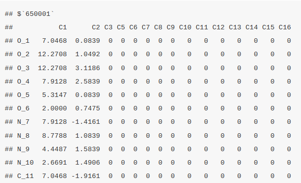
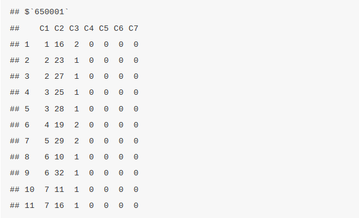
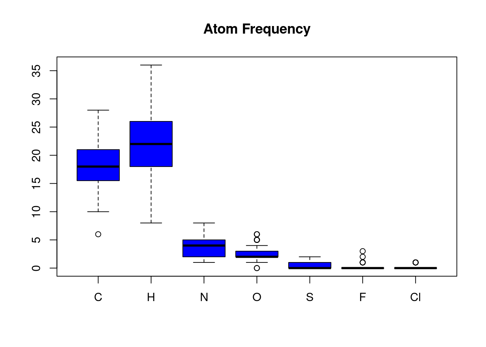

Chapter 3 Chemical Properties prediction and visualized.
Structural properties similarity searching
Molecular visualizations
3.1 Whats is ChemmineR?
ChemmineR is an R package under the BioConductor library that is designed for the analysis and visualization of chemical data, especially on molecules and compounds. Below are some of its key features;
- Visualization: It provide tools that visualize the chemical structures and theor relationships. This make it easier to interpret and communicate your findings.
- Chemical Structure Handling: ChemmineR can read, write, and manipulate chemical structures. These structures are stored in file formats like SDF and SMILES which are the industry standard ways to describe the molecular structure in text format.
- Clustering: ChemmineR can identify patterns and relationships between different molecules by grouping the like ones together.
- Structure Similarity Search: ChemmineR can compare different chemical structures and find their similarity and how useful they are for certain tasks like identifying compounds that may have similar properties or biological effects.
3.2 Installation
The ChemmineR package can be installed from R with:
if(!requireNamespace("BioManager", quitely=TRUE))
install.packages("BioManager")
BiocManager::install("ChemminerR")3.3 Loading the package and Documentation
The below command is called to invoke the ChemmineR package to the program
To find the documentation and list all functions and classes call the command below
library(help="ChemmineR") # Lists all the functions and classesTo open a PDF manual for ChemmineR documentation from R
vignette("ChemmineR")3.4 Create Instances of SDFset class
SDF(Structure-Data-File) is the standard format for representing the chemical structures. Let me briefly walk you through a practical session on how to work with SDF files before diving deep into ChemmineR package.
- Load the
sdfsamplefile
This is a built in dataset in ChemmineR. It is loaded by
- Explore the
SDFsetobject
This data type falls under the classSDFset.
## [1] "SDFset"
## attr(,"package")
## [1] "ChemmineR"Calling the data set by its name provides the summary
## An instance of "SDFset" with 100 moleculesIn this case, the sdfsample has 100 molecules. To access a specific molecule, call it by index. For instance,accessing the first molecule;
## $CMP1
## An instance of "SDF"
##
## <<header>>
## Molecule_Name
## "650001"
## Source
## " -OEChem-07071010512D"
## Comment
## ""
## Counts_Line
## " 61 64 0 0 0 0 0 0 0999 V2000"
##
## <<atomblock>>
## C1 C2 C3 C5 C6 C7 C8 C9 C10 C11 C12 C13 C14 C15 C16
## O_1 7.0468 0.0839 0 0 0 0 0 0 0 0 0 0 0 0 0
## O_2 12.2708 1.0492 0 0 0 0 0 0 0 0 0 0 0 0 0
## ... ... ... ... ... ... ... ... ... ... ... ... ... ... ... ...
## H_60 1.8411 -1.5985 0 0 0 0 0 0 0 0 0 0 0 0 0
## H_61 2.6597 -1.2843 0 0 0 0 0 0 0 0 0 0 0 0 0
##
## <<bondblock>>
## C1 C2 C3 C4 C5 C6 C7
## 1 1 16 2 0 0 0 0
## 2 2 23 1 0 0 0 0
## ... ... ... ... ... ... ... ...
## 63 33 60 1 0 0 0 0
## 64 33 61 1 0 0 0 0
##
## <<datablock>> (33 data items)
## PUBCHEM_COMPOUND_CID PUBCHEM_COMPOUND_CANONICALIZED
## "650001" "1"
## PUBCHEM_CACTVS_COMPLEXITY PUBCHEM_CACTVS_HBOND_ACCEPTOR
## "700" "7"
##
## "..."-Get the names of the molecules
To find column names of the sdf data set call the sdfid command.
## [1] "650001" "650002" "650003" "650004" "650005" "650006" "650007" "650008"
## [9] "650009" "650010" "650011" "650012" "650013" "650014" "650015" "650016"
## [17] "650017" "650019" "650020" "650021" "650022" "650023" "650024" "650025"
## [25] "650026" "650027" "650028" "650029" "650030" "650031" "650032" "650033"
## [33] "650034" "650035" "650036" "650037" "650038" "650039" "650040" "650041"
## [41] "650042" "650043" "650044" "650045" "650046" "650047" "650048" "650049"
## [49] "650050" "650052" "650054" "650056" "650058" "650059" "650060" "650061"
## [57] "650062" "650063" "650064" "650065" "650066" "650067" "650068" "650069"
## [65] "650070" "650071" "650072" "650073" "650074" "650075" "650076" "650077"
## [73] "650078" "650079" "650080" "650081" "650082" "650083" "650085" "650086"
## [81] "650087" "650088" "650089" "650090" "650091" "650092" "650093" "650094"
## [89] "650095" "650096" "650097" "650098" "650099" "650100" "650101" "650102"
## [97] "650103" "650104" "650105" "650106"The SDF dataset can alsio be converted to SMILES (Simplified Molecular Input Line Entry System) format. However, you need to install the ChemmineOB before converting SMILE format
BiocManager::install("ChemmineOB")the convert the file
## An instance of "SMIset" with 1 molecules- Save and export the SDF data
The SDF file can be exported to a file locally.
3.5 Retrieving atom, bond and data block
Atom block
The atom block provides information about each atom in a molecule, including its coordinates in 3D space and the element symbol. It can be retrieved using ChemmineR by invoking the function atomblock. In this case, we are retrieving the atom block information of the first four molecules.
atomblock(sdfset[1:4])

Bond block
The bond block provide the details of the connection between/among atoms and the type of bond. The bond block information can be retrieved by the function bondblock. In this case we are retrieving the bonblock information of the first four molecules
bondblock(sdfset[1:4])

Data Block
This function contains the additional information or the metadata found on the SDF file. This metadata is the information connected to the molecular properties for instance the molecular weight and logP.
## $`650001`
## MF MW C H N O
## "C23H28N4O6" "456.4916" "23" "28" "4" "6"
## S F Cl
## "0" "0" "0"
##
## $`650002`
## MF MW C H N O
## "C18H23N5O3" "357.4069" "18" "23" "5" "3"
## S F Cl
## "0" "0" "0"
##
## $`650003`
## MF MW C H N
## "C18H18N4O3S" "370.4255" "18" "18" "4"
## O S F Cl
## "3" "1" "0" "0"
##
## $`650004`
## MF MW C H N
## "C21H27N5O5S" "461.5346" "21" "27" "5"
## O S F Cl
## "5" "1" "0" "0"3.5.1 Assigning compound IDS and keeping them unique
Return IDs from SDFset object. They are the compound IDS stored in the data block of each molecule within the SDFset that are used to unique identify each molecule. In this case we will subset and return the first four molecules.
## [1] "650001" "650002" "650003" "650004"Returns IDs from SD file header. The data set might have been combined from other different smaller data sets therefore, the makeUnique() function is used a unique ID to each molecule. It does by appending the suffixes “_1”, “_2” to the compound IDS. This is also used to handle the duplicates.
## [1] "No duplicates detected!"3.5.2 Converting the data blocks in an SDFset to a matrix
These data blocks can also be converted to a matrix by
The matrix can also be split into numeric and character matrix by splitNumChar() function
Slice the numeric matrix
## MW C
## 650001 456.4916 23
## 650002 357.4069 18Slice the character matrix
numchar[[2]][1:2, 10:11]Compute atom frequency matrix, molecular weight and formula
The molecular formula for each molecule can be computed by the MF() function and will return an output that is a character of vectors, each entry corresponding to a molecule in the SDFset. MW calculates the molecular weight similar to the MF function where each molecule corresponds to the molecule in the SDFset.
## MF MW C H N O S F Cl
## 650001 C23H28N4O6 456.4916 23 28 4 6 0 0 0
## 650002 C18H23N5O3 357.4069 18 23 5 3 0 0 0
## 650003 C18H18N4O3S 370.4255 18 18 4 3 1 0 0
## 650004 C21H27N5O5S 461.5346 21 27 5 5 1 0 0Assign matrix data to data block
## $`650001`
## MF MW C H N O
## "C23H28N4O6" "456.4916" "23" "28" "4" "6"
## S F Cl
## "0" "0" "0"3.5.3 String searching in SDFset
Returns the summary view of the matches
## $`650001`
## An instance of "SDF"
##
## <<header>>
## Molecule_Name
## "650001"
## Source
## " -OEChem-07071010512D"
## Comment
## ""
## Counts_Line
## " 61 64 0 0 0 0 0 0 0999 V2000"
##
## <<atomblock>>
## C1 C2 C3 C5 C6 C7 C8 C9 C10 C11 C12 C13 C14 C15 C16
## O_1 7.0468 0.0839 0 0 0 0 0 0 0 0 0 0 0 0 0
## O_2 12.2708 1.0492 0 0 0 0 0 0 0 0 0 0 0 0 0
## ... ... ... ... ... ... ... ... ... ... ... ... ... ... ... ...
## H_60 1.8411 -1.5985 0 0 0 0 0 0 0 0 0 0 0 0 0
## H_61 2.6597 -1.2843 0 0 0 0 0 0 0 0 0 0 0 0 0
##
## <<bondblock>>
## C1 C2 C3 C4 C5 C6 C7
## 1 1 16 2 0 0 0 0
## 2 2 23 1 0 0 0 0
## ... ... ... ... ... ... ... ...
## 63 33 60 1 0 0 0 0
## 64 33 61 1 0 0 0 0
##
## <<datablock>> (9 data items)
## MF MW C H
## "C23H28N4O6" "456.4916" "23" "28" "..."The molecules can searched using the grepSDSFset function. The searching is performed by string marching and then returns an SDF summary of the matching entries. In this case we will search the molecule by index.
## 1 1 1 1 1 1 1 1 1
## 1 2 3 4 5 6 7 8 93.6 Molecular visualization in R
Export SDFset to SDF file locally
Plot molecule structure of one or many SDFs

Compound viewing in web browser
sdf.visualize(sdfset[1:4])You save the image of the visualization
3.6.1 Molecular Property Functions
Different types of atoms vary in their frequency across all molecules in an SDFset. The atomCountMA() is used to compute their frequency.

In the above SDFset, Carbon and Hydrogen atoms are the most frequent while Flourine and Chlorine atoms are the least frequent in this sample SDFset.
These data is stored in the variable atomprop.
3.6.2 Similarity Comparisons and Searching
3.6.2.1 Maximum Common Substructure(MCS) Searching
ChemmineR provides a functionality/algorithm that can be used to perform a pairwise compound comparison, clustering and similarity searching. This package is just but an add-on package to ChemmineR referred to as fmcsR and can be installed by
BiocManager::install("fmcsR")To load the library to the console run
We will use a different SDSFset provided by the fmcsR package and compare between caffeine and viagra
data(fmcstest) # Loads test sdfset object
test <- fmcs(fmcstest[1], fmcstest[2], au=2, bu=1) # Searches for MCS with mismatches
plotMCS(test) # Plots both query compounds with MCS in color 
3.6.2.2 AP/APset Classes for Storing Atom Pair Descriptors
Atom pair descriptors are a type of molecular fingerprint that capture information about the types of atoms and the distances between them in a molecule, which is useful for comparing and analyzing molecular structures.
ChemmineR and fmcsR libraries has got you covered on this, the function sdf2ap() function is used to convert an SDF data of a molecule into atom pair descriptors. Lets extract the atom pair descriptors of the first molecule.
## An instance of "AP"
## <<atom pairs>>
## 52614450304 52615497856 52615514112 52616547456 52616554624 ... length: 528# Extract for many compounds
apset <- sdf2ap(sdfset)
cid(apset[1:4]) # Compound IDs
ap(apset[1:4]) # Atom pair descriptors
db.explain(apset[1]) # Return atom pairs in human readable format 3.7 Resources
The complete documentation (with code) of the ChemmineR package can be found below here
- https://www.bioconductor.org/packages/release/bioc/vignettes/ChemmineR/inst/doc/ChemmineR.html
- https://www.bioconductor.org/packages/devel/bioc/vignettes/fmcsR/inst/doc/fmcsR.html